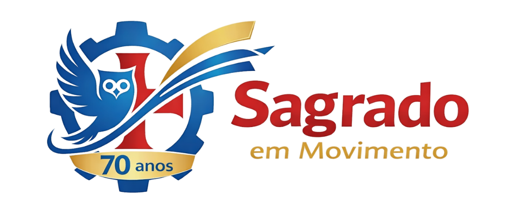
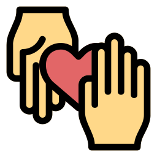

Resumo Profissional
"Profissionalmente, almejo conquistar minha primeira oportunidade na área UX/UI Design ou Web Design. Também estou aberta a oportunidades em outras áreas em que tenho afinidade, contribuindo com dedicação, criatividade e inteligência emocional. Busco oportunidades para aprimorar meus conhecimentos nas diferentes áreas do Design e desenvolvimento de software, com a possibilidade de compreender e executar todas as fases do ciclo de vida de um sistema computacional."

Estagiária em Administração Escolar, Comunicação e Suporte em TI
Colégio Sagrado Coração de Jesus — Rio Grande, RS (Presencial) Out. 2025 – Atualmente
Atuo no suporte administrativo e operacional, utilizando as plataformas Diário Escola e Iônica para otimizar a gestão de fluxos internos.
Sou responsável pelo atendimento direto aos familiares, oferecendo orientações técnicas sobre o acesso e a utilização das ferramentas digitais da instituição.
Na área de comunicação institucional, elaboro artes para redes sociais e realizo a edição básica de conteúdos audiovisuais com Canva e Photopea. Além disso, presto suporte técnico em informática para a manutenção de equipamentos, auxílio em demandas de organização digital cotidiana e colaboro com as operações gerais da Secretaria Escolar.
Auxiliar de Logística em Licitações
RFA Suprimentos — Rio Grande, RS (Presencial) Mar. 2023 – Out.2023
Atuei no apoio técnico e logístico de processos licitatórios, elaborando planilhas com requisitos de editais, analisando fichas técnicas e realizando cotações com fornecedores para propostas comerciais. Fui responsável por preparar e enviar documentação por sistemas de pregões eletrônicos (como Comprasnet), além de organizar arquivos fiscais e acompanhar prazos e resultados. Desenvolvi habilidades com Excel, análise de dados e atenção aos detalhes em ambientes com alta exigência documental.

Experiências Voluntárias
Membro de Vendas - Team Leader CX | GH
AIESEC — Rio Grande, RS (Remoto) Ago. 2022 - Jan. 2023
Atuei como membro e posteriormente como líder do time de recebimento de intercambistas voluntários na AIESEC em Pelotas, com foco em experiência do intercambista e engajamento de hosts. Minhas responsabilidades incluíam:
Como membro:
- Auxílio em campanhas de Global Home em mídias sociais.
- Produção e personalização de materiais didáticos para lecionação de aulas de Português a intercambistas, visando melhor experiência e estadia em nosso país.
- Gerenciamento e supervisão de tarefas aos membros.
- Auxílio na comunicação interna e engajamento de equipe.
Como líder de time:
- Supervisão de membros do time, garantindo a execução das atividades e o cumprimento de prazos.
- Planejamento e organização de reuniões, treinamentos e workshops para o desenvolvimento das habilidades da equipe.
- Coordenação de campanhas de engajamento e comunicação com hosts e intercambistas, visando melhorar a experiência de todos os envolvidos.
- Desenvolvimento de estratégias para otimizar processos internos e melhorar a eficiência do time.
Essa experiência me proporcionou um crescimento pessoal e profissional significativo, permitindo-me aplicar meus conhecimentos em um ambiente real e desafiador, contribuindo para o sucesso das atividades da AIESEC e para a experiência positiva dos intercambistas em Pelotas.
Durante minha experiência como membro e líder, desenvolvi habilidades de liderança, comunicação, trabalho em equipe, resolução de problemas e gestão de projetos. Além disso, adquiri conhecimentos sobre a cultura e os desafios enfrentados por intercambistas, aprimorando minha empatia e capacidade de adaptação a diferentes contextos culturais.
Durante dois meses, pude ter a experiência remota como membro do time de recebimento de intercambistas voluntários na AIESEC em Pelotas. Ministrei aulas de português para os intercambistas e cuidei da experiência dos mesmos em Pelotas, desde a saída de seu país até sua estadia no Brasil. Também participei das atividades de Global Home, onde lidamos com campanhas para conseguir hosts e cuidava de reuniões entre eles. Após os dois primeiros meses como membro, tive a gratificante experiência de liderar o time, realizando as atividades anteriores acrescidas da supervisão constante dos membros, além de ministrar aulas para o time, geralmente sobre habilidades importantes para cuidar da experiência dos intercambistas.